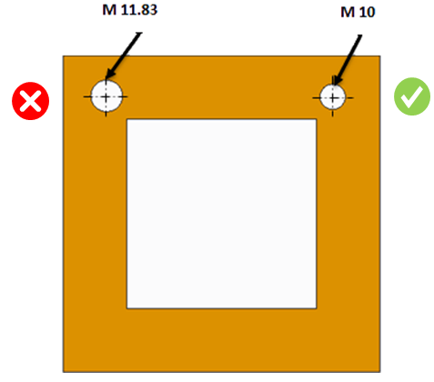

可能な限り、特殊なドリル工具に伴う追加コストを避けるために、標準のドリルサイズを使用するのが最善です。
特殊な穴径は、特注ドリル工具の購入費や在庫費用により製造コストを増加させます。
また、標準穴を使用することで標準サイズのアクセサリを選択しやすくなり、その結果バリエーション（種類）を最小化できます。
CADモデル内の穴は、データベース内のドリルサイズと比較され、標準穴径かどうかがチェックされます。特定の穴径が見つからない場合、その穴は非標準として報告されます。
製造で利用可能な標準ドリルサイズに従って、パーツ上の穴径を作成することを推奨します。
デフォルトでは、本ルールは標準ドリルサイズを含む標準穴径のデータベースを構成します。ユーザーがルールマネージャーのダイアログボックスでルールを編集すると、［Standard Hole Sizes］ダイアログボックスが表示されます。

［Display］オプションを使用して、MetricテーブルまたはInchテーブル内の値を表示します。
［Select］ ［All sizes］（drill、clearance drills、tab drills）または ［Drill sizes］ のサブセットを選択し、穴の検証に使用します。
デフォルトでは、［Drill sizes］ オプションが選択されています。
データベースに新しいサイズを追加／既存サイズを削除します。
［Select］ ［Metric］ を選択すると、穴径の検証時にメートル系ドリルのみを考慮します。
［Select］ ［Inch］ を選択すると、穴径の検証時にインチ系ドリルのみを考慮します。
［Select］ ［Use Both Units］ を選択すると、穴径の検証時にメートル系およびインチ系の両方のドリルを考慮します。ドリル径の単位が穴径の単位と異なる場合、比較のためにドリルサイズはドキュメント単位に変換されます。
注記:
推奨される最も近い値は、テーブルで利用可能なメートル系およびインチ系ドリルの統合リストに基づき、1つの単位（パーツの単位に従う）で表示されます。
［Select］ ［Use Document Units］ を選択すると、穴径の検証時にドキュメント単位に基づいてドリルを考慮します。例えば、英制（インチまたはフィート）単位のドキュメントでは、インチ系ドリルのみを考慮します。これはデフォルトの選択です。
穴径がデータベースで指定された最大ドリル径を超える場合、その穴はミリング形状として扱われ、ドリル関連ルールは適用されません。
最大ドリル径は、Metricテーブルに存在する標準ドリルサイズの最大値に基づき、Metric unit 選択に対して決定されます。
最大ドリル径は、Inchテーブルに存在する標準ドリルサイズの最大値に基づき、Inch unit 選択に対して決定されます。
最大ドリル径は、Use Both Units の場合、Metric unit または Inch unit のドリルテーブルのいずれかに存在する標準ドリルサイズの最大値に基づいて決定されます。
最大ドリル径は、Use Document Units の場合、ドキュメント単位に応じて、Metric unit または Inch unit のドリルテーブルのいずれかに存在する値に基づいて決定されます。
ユーザーが Metric オプションを選択した場合、デフォルトの最大ドリル径は 45.0 mm になります。ユーザーが Inch を選択した場合、デフォルトの最大ドリル径は 1.0 Inches になります。
このフィールドを使用して、穴サイズとドリルサイズを比較する際のカスタム公差を指定します。比較にはドキュメント単位と同じ単位を使用してください。
ユーザーは ［Import］ ボタンを使用して、Excelシートのテンプレートにある一括データをインポートできます。
標準テンプレート形式:
D |
0 |
1.0 |
25 |
D または d = 標準穴径